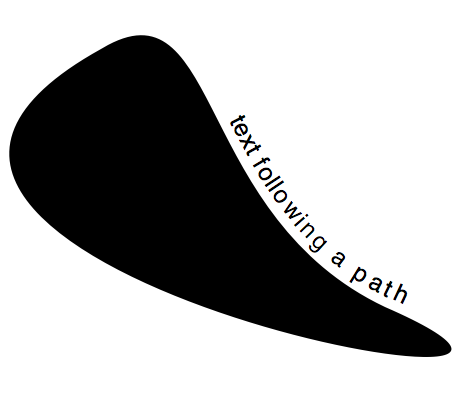

Posted by piupiu on Mar 04, 2009
Thanks!
Posted by john on Apr 23, 2012
This definitely works so good. You are able to get so much great use from it. The options are endless with it. zoloft suit
Thanks!
This definitely works so good. You are able to get so much great use from it. The options are endless with it. zoloft suit

Fit text to path
Posted by Tom De Smedt on Feb 20, 2009
Some code to display text on a path.
It's a rough approximation but I thought it might be useful to someone.